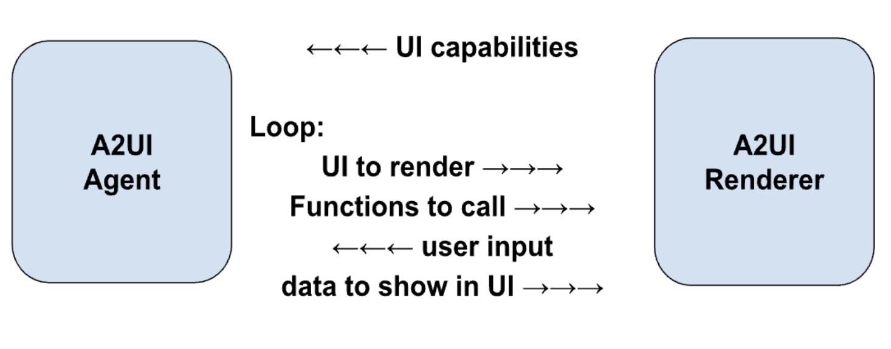

용어집¶
A2UI 프로토콜 용어¶
A2UI 프로토콜에서 요구되는 용어입니다.
A2UI 에이전트와 A2UI 렌더러¶
A2UI 프로토콜은 에이전트와 렌더러 사이의 대화를 가능하게 합니다.
- 렌더러는 A2UI 카탈로그 형태의 UI 기능과 그 사용 방법에 대한 지침을 제공합니다.
- 에이전트는 다음 루프를 반복합니다.
- 받은 카탈로그를 고려하여 호출할 UI와 함수를 제공합니다.
- 렌더러가 전달한 사용자 입력을 받습니다.
- UI에 표시할 데이터를 업데이트합니다.

이 프로토콜은 AI 기반 에이전트를 위해 설계되었지만, 결정론적인 에이전트와도 함께 동작할 수 있습니다. 예를 들어 에이전트가 미리 준비된 A2UI UI를 반환할 수 있습니다.
에이전트가 stateless이거나 카탈로그 보존을 보장하지 않는 경우, 렌더러는 모든 메시지에 카탈로그를 함께 제공해야 합니다.
또 어떤 경우에는 에이전트가 미리 정의된 카탈로그를 사용하기 때문에, 렌더러는 해당 카탈로그를 지원하거나 어댑터를 사용해야 합니다.
GenUI 컴포넌트¶
에이전트가 사용할 수 있도록 허용된 UI 컴포넌트입니다. 예: date picker, carousel, button, hotel selector.
Catalog¶
- 항목화된 렌더러 기능입니다.
- 에이전트가 UI를 생성할 때 사용할 수 있는 컴포넌트 목록
- 렌더러가 호출할 수 있는 함수 목록
- 스타일과 테마
- 렌더러 기능을 어떻게 사용해야 하는지에 대한 설명입니다.
사용 사례에 따라 카탈로그 컴포넌트는 도메인에 더 적거나 더 많이 특화될 수 있습니다.
-
덜 특화된 경우:
버튼, 라벨, 행, 열, 옵션 선택기 같은 기본 UI primitive입니다.
-
더 특화된 경우:
HotelCheckout또는FlightSelector같은 컴포넌트입니다.
Basic Catalog¶
A2UI를 빠르게 시작할 수 있도록 A2UI 팀이 유지 관리하는 카탈로그입니다.
basic catalog를 참고하세요.
Surface¶
A2UI 에이전트가 구성하고 A2UI 렌더러가 관리하는 UI 영역으로, 여러 컴포넌트로 구성됩니다. Surface는 중첩될 수 없습니다.
에이전트 아키텍처¶
A2UI 에이전트에는 여러 선택지가 있습니다.
-
동일 프로세스 또는 서버 측:
에이전트와 렌더러가 클라이언트 측 애플리케이션의 한 프로세스 안에 있을 수 있습니다. 예: 데스크톱 Flutter 애플리케이션.
또는 렌더러는 UI를 표시하는 장치에 있고, 에이전트는 다른 장치(서버)에 있을 수 있습니다.
-
오케스트레이터 에이전트:
중앙 오케스트레이터가 사용자와 여러 전문 서브 에이전트 사이의 상호작용을 관리합니다. 오케스트레이터는 동일 프로세스에 있을 수도 있고 서버에 있을 수도 있습니다.
-
Pulling / pushing:
에이전트는 렌더러의 메시지/요청을 기다릴 수도 있고, 렌더러로 메시지/요청을 push할 수도 있습니다.
-
Stateful / stateless:
에이전트는 상태를 보존할 수도 있고 stateless일 수도 있습니다.
-
다른 프로토콜과 혼합:
A2UI는 다른 프로토콜과 함께 사용할 수 있습니다. 예를 들어 에이전트가 MCP 및/또는 A2A 서버일 수 있습니다.
-
기타 변형:
위 선택지 외에도 어떤 커스텀 변형이든 가능합니다.
렌더러 스택¶
A2UI 렌더러의 기능은 별도로 개발하고 재사용할 수 있는 계층으로 구성됩니다.
-
Core Library:
카탈로그를 설명하고 에이전트와 상호작용하는 데 필요한 primitive 집합입니다.
예를 들어 JavaScript web core library를 참고하세요.
-
Catalog Schema:
JSON 형태의 카탈로그 정의입니다.
예를 들어 basic catalog schema를 참고하세요.
-
구체적인 프레임워크에서 에이전트 지시를 실행하는 코드입니다. 예: - JavaScript core와 catalog는 Angular, Electron, React, Lit 프레임워크에 맞게 조정될 수 있습니다. - Dart core와 catalog는 Flutter와 Jaspr 프레임워크에 맞게 조정될 수 있습니다.
Angular adapter를 참고하세요.
-
Catalog Implementation:
특정 프레임워크에 대한 카탈로그 스키마 구현입니다.
예: - Angular implementation of the basic catalog를 참고하세요.
flowchart TD;
cimpl("Catalog<br>Implementation")-->cschema("Catalog<br>Schema");
cschema-->core("Core<br>Library");
cimpl-->fadapter("Framework<br>Adapter");
fadapter-->core;A2UI 메시지¶
에이전트와 렌더러 사이의 메시지입니다.
프로토콜은 스트리밍을 허용하므로, 어떤 메시지든 완료된 상태(완전히 전달됨)이거나 완료되지 않은 상태(부분적으로 전달됨)일 수 있습니다. 완료된 메시지는 성공적으로 전달되어 완료되었거나, 기술적 문제로 전달이 중단되어 interrupted 상태일 수 있습니다.
data flow guide를 참고하세요.
에이전트 턴¶
에이전트가 사용자 입력을 기다리기 시작하기 전까지 보내는 메시지 집합입니다.
데이터 모델¶
렌더러와 에이전트가 공유하고 양쪽 모두 업데이트할 수 있는 관찰 가능한 계층적 JSON 유사 객체입니다. 각 Surface는 별도의 Data Model을 갖습니다.
컴포넌트는 데이터 모델의 노드에 바인딩될 수 있으며, 값이 변경되면 자동으로 업데이트됩니다.
데이터 모델은 사용자 상호작용을 상태 객체로 캡처해 에이전트에 전송하고, 동시에 에이전트가 데이터 업데이트를 UI로 다시 push할 수 있게 하여 양방향 동기화를 제공합니다.
data binding guide를 참고하세요.
데이터 참조¶
컴포넌트 정의에서 데이터 요소를 참조하는 방식입니다. 데이터 모델의 경로 또는 값으로 해석될 수 있습니다.
basic catalog 예시를 참고하세요.
클라이언트 함수¶
필요할 때 에이전트가 호출할 수 있도록 제공되는 함수입니다.
LLM tool과 혼동하지 마세요.
| Feature | Client Function | LLM Tool Invocation |
|---|---|---|
| Executor | A2UI Renderer | LLM이 실행 세부사항을 신경 쓰지 않고 호출을 요청합니다. |
| Timing | 에이전트에서 렌더러로 메시지가 전송된 뒤입니다. | 에이전트에서 렌더러로 메시지가 전송되기 전입니다. |
| Purpose | UI 로직(검증, 표시 토글, 포매팅) | 추론, 데이터 가져오기, 백엔드 액션 |
| Definition | 클라이언트 측 함수 레지스트리에 등록되고 카탈로그에 광고됩니다. | ToolDefinition에 정의됩니다(LLM에 전달됨). |
| State Access | DataContext와 Input 값에 접근합니다. | AI에 요청을 트리거할 수 없습니다. 외부 API, 데이터베이스, 서비스에는 접근할 수 있습니다. |
common types 예시를 참고하세요.
Action¶
UI에서 사용자가 트리거한 상호작용을 담는 컨테이너입니다. Action은 두 종류가 있습니다.
- Event: 처리를 위해 에이전트로 dispatch됩니다(예: "Submit" 클릭).
- Function: 렌더러에서 로컬로 실행됩니다(예: URL 열기).
actions 상세 가이드를 참고하세요.
생성형 UI 용어¶
A2UI 프로토콜에 필수는 아니지만 생성형 UI 맥락에서 흔히 사용되는 용어입니다.
GenUI의 알려진 패턴¶
-
Chat:
생성된 UI 조각이 시간순으로 하나씩 나타나며, 사용자 입력과 섞여 세로로 스크롤되는 영역에 표시됩니다.
-
Canvas:
에이전트와 협업하기 위한 공간입니다.
-
Dashboard:
생성된 UI 조각이 시간순이 아니라 의미에 따라 정리되며, 사용자가 기대하는 위치에 안정적으로(일명 pinned) 유지됩니다.
-
Wizard:
특정 작업에 필요한 정보를 수집하기 위해 생성된 UI 조각이 하나씩 표시됩니다.
NoAI 정보¶
AI가 접근할 수 없는 정보로 분류된 정보입니다. 예: 신용카드 정보.
어떤 정보가 AI에 접근되어서는 안 되는지는 애플리케이션 소유자가 정의하며, 맥락에 따라 달라집니다. 예를 들어 어떤 맥락에서는 병력이 절대 AI로 전달되어서는 안 되지만, 다른 맥락에서는 의료 진단을 돕기 위해 AI가 적극적으로 사용되며 병력이 필요할 수 있습니다.
이 용어는 GenUI 맥락에서 중요합니다. 최종 사용자는 자신의 입력 중 무엇이 AI로 전달될 수 있고 무엇이 허용되지 않는지 명확히 볼 수 있기를 원하기 때문입니다.